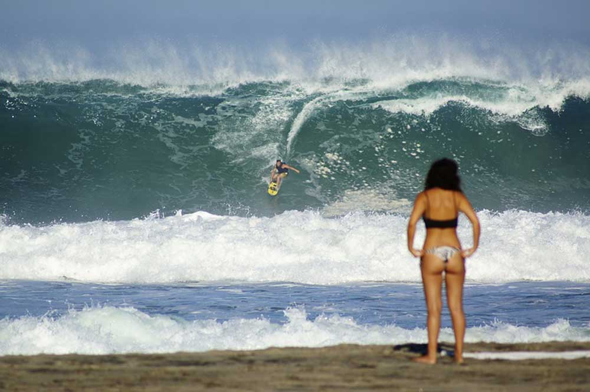

Playa Zicatela

Es sin duda la playa más reconocida a nivel mundial para la práctica del surf. Su bello andador acaba de ser construído y le permitirá disfrutar ya sea de día o de noche de esta playa.
Es una playa a mar abierto, de gran longitud y con un ancho que varía aproximadamente de 30 a 40 metros. La arena es fina de color gris y pendiente fuerte; el agua templada, cristalina y de tonalidades verdes y azules. El oleaje, en ocasiones, alcanza hasta los 6 metros de altura, ideal para la práctica del surfing.
En esta playa es posible disfrutar de baños de sol y caminatas o la natación, que se recomienda solamente a expertos.Podrá encontrar tiendas de ropa, artesanías, restaurantes, hoteles, cabañas y todo tipo de bares. La vida nocturna se vive intensamente en esta playa. Por las mañanas tome un delicioso café mientras observa practicar a los mejores surfistas del mundo.
Cada año en el mes de noviembre, se lleva a cabo en esta playa un torneo de surfing con duración de tres días en el cual participan surfistas de la región costeña, nacionales y extranjeros, quienes ofrecen un verdadero espectáculo en este maravilloso arte de dominar las olas. Asimismo, se efectúa el concurso de Miss Bikini, rallies maratones y eventos culturales.
Se pueda llegar a esta playa ubicada al sureste de la población, partiendo del Andador Pérez Gasga, dirigiéndose a la carretera costera hacia Puerto Angel. 500 metros (1640.41 pies) adelante desvíese a la derecha y 200 metros (656.16 pies) más adelante encontrará la playa. También se puede llegar caminando por toda la orilla de la playa siguiendo hacia el sureste.